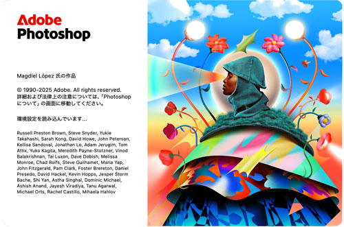
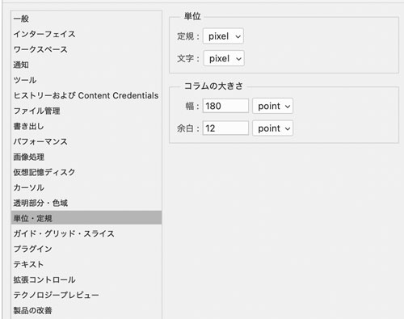
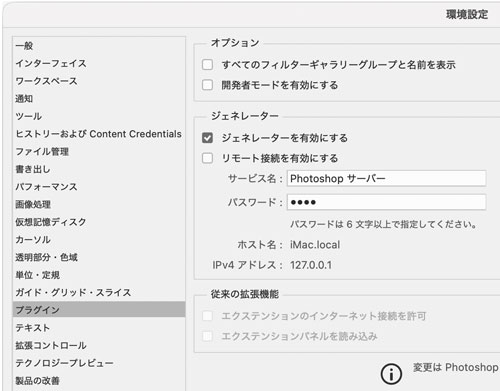
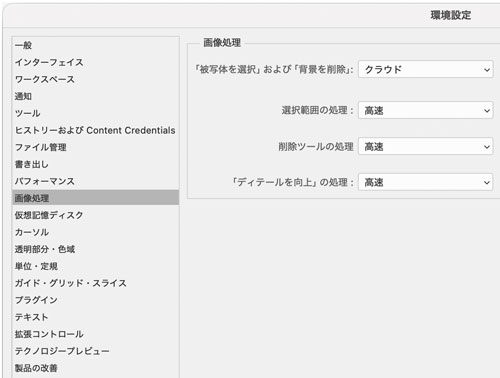
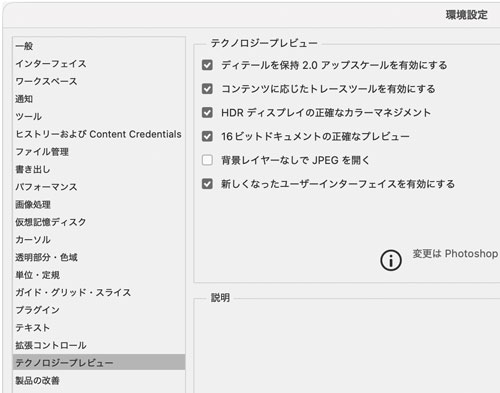
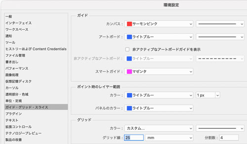
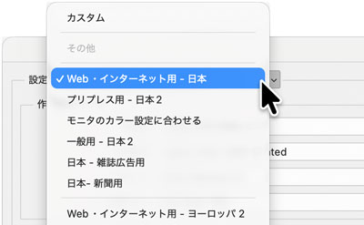
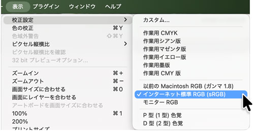

Adobe Photoshop v27にアップデート

環境設定
単位・定規

プラグイン
- 「被写体を選択」および「背景を削除」を「クラウド」にする

画像処理
- 「ジェネレーターを有効にする」をチェックする

テクノロジープレビュー
- 「コンテンツに応じたトレースツールを有効にする」をチェックする

ガイド・グリッド・スライス
- ガイド「カンバス」を「サーモンピンク：実践」する

カラー設定
- 「編集」→「カラー設定」
- 「設定」→「Web・インターネット用-日本」に変更

表示
- 「校正設定」→「インターネット標準 RGB（sRGB）」を選択
